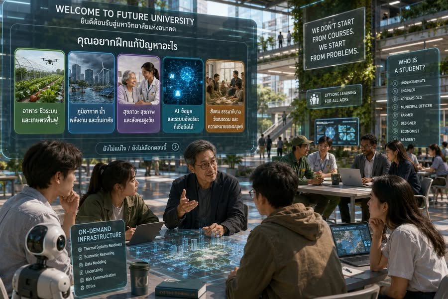

วันที่วิชาหายไป
{kind=link}

ปี 2047 นักศึกษาใหม่ไม่ได้รับตารางเรียนแบบเมื่อยี่สิบปีก่อน ไม่มี Thermodynamics เช้าวันจันทร์ Microeconomics บ่ายวันอังคาร หรือ Introduction to Programming เช้าวันพุธ
บนหน้าจอต้อนรับมีเพียงคำถามสั้น ๆ ว่า “คุณอยากฝึกแก้ปัญหาอะไร”
ห้าสนามโจทย์แทนจุดเริ่มต้นแบบรายวิชา
ผู้เรียนเลือกสำรวจโจทย์จากห้ากลุ่ม: อาหาร ชีวระบบ และเกษตรฟื้นฟู; ภูมิอากาศ น้ำ พลังงาน และถิ่นอาศัย; สุขภาวะ สุขภาพ และสังคมสูงวัย; AI ข้อมูล และระบบอัจฉริยะที่เชื่อถือได้; และสังคม ธรรมาภิบาล วัฒนธรรม และความหมายของมนุษย์
บางคนเลือกน้ำท่วมเมือง บางคนเลือกอาหารปลอดภัย บางคนเลือก AI ในบริการรัฐ บางคนเลือกสุขภาวะผู้สูงอายุ และบางคนยังไม่เลือก เพราะยังไม่รู้ว่าตนสนใจอะไร แต่ไม่มีใครถูกบังคับให้เริ่มจากชื่อรายวิชา
เริ่มจากปัญหา ไม่ได้แปลว่าไม่ต้องมีฐานความรู้
อาจารย์บอกผู้เรียนกลุ่มใหม่ว่า ที่นี่ไม่ได้เริ่มจากวิชา แต่หากจะเข้าไปแตะปัญหาจริง ทุกคนต้องมีฐานความรู้มากพอ มิฉะนั้นจะเป็นเพียงคนมีความตั้งใจดีที่อาจทำให้เกิดความเสียหาย
ผู้ที่จะลดพลังงานใน cold chain ของผลไม้ต้องผ่าน Thermal Systems Readiness ผู้ที่จะทำตลาดคาร์บอนสำหรับเกษตรกรต้องผ่าน Economic Reasoning for Public Problems ส่วนผู้ที่จะสร้าง AI เตือนภัยน้ำท่วมต้องมี Data Modeling, Uncertainty, Risk Communication และ Ethics
วิชายังมีอยู่ แต่ไม่ใช่ destination
ความรู้และการฝึกพื้นฐานไม่ได้หายไป เพียงไม่ใช่จุดหมายที่ผู้เรียนต้องเดินตามลำดับตายตัว มันกลายเป็น on-demand infrastructure ที่ถูกเรียกใช้เมื่อโจทย์ทำให้เห็นว่าผู้เรียนยังต้องรู้อะไร ฝึกอะไร และพิสูจน์ความพร้อมด้านใด
การเปลี่ยนเช่นนี้ทำให้รายวิชาเลิกเป็นหน่วยจัดองค์กรหลัก แต่ยังคงมาตรฐานของความรู้ไว้ และเชื่อมฐานความรู้นั้นกับเหตุผลในการนำไปใช้จริง
ใครคือนักศึกษา เมื่อการเรียนรู้เกิดตลอดชีวิต
ทีมหนึ่งอาจประกอบด้วยนิสิตปริญญาตรี วิศวกรวัย 40 เจ้าหน้าที่เทศบาล เกษตรกร นักออกแบบ นักเศรษฐศาสตร์ และ AI agent ที่ลงทะเบียนเป็นผู้ช่วยวิเคราะห์ข้อมูล ขอบเขตระหว่างนักศึกษา ผู้เชี่ยวชาญ ผู้ปฏิบัติงาน และชุมชนจึงเปลี่ยนไป
อาจารย์ก็ไม่ได้เป็นเจ้าของห้องเรียนหรือผู้บรรยายบทที่หนึ่งเสมอไป แต่เป็นคนช่วยกำหนดมาตรฐาน จัดสภาพแวดล้อม และทำให้ผู้คนต่างวัย ต่างอาชีพ และต่างศาสตร์เรียนรู้ร่วมกันจากโจทย์เดียวกัน
มหาวิทยาลัยไม่หายไป แต่เปลี่ยนเหตุผลของการมีอยู่
มหาวิทยาลัยไม่ได้เป็นโรงงานผลิตบัณฑิตอีกต่อไป แต่มันกลายเป็นสนามฝึกคนแก้ปัญหา
คุณค่าของมหาวิทยาลัยหลังยุครายวิชาจึงไม่ได้อยู่ที่การจัดตารางให้ทุกคนเรียนครบ แต่อยู่ที่การทำให้ผู้เรียนสร้างฐานความรู้ เรียกใช้ความเชี่ยวชาญ ทำงานกับคนหลากหลาย และรับผิดชอบต่อปัญหาจริงได้
ตอนถัดไป Foundation Commons: โรงงานฐานความรู้ ถ้าไม่เริ่มจากรายวิชา มหาวิทยาลัยจะรับผิดชอบความรู้พื้นฐาน แล็บ การประเมิน และความพร้อมของผู้เรียนอย่างไร